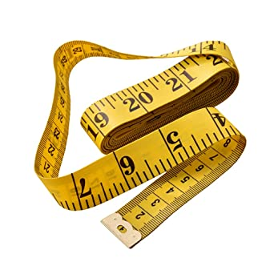

Conversiones de medidas
Conversiones de metros, yardas, pulgadas, pies
Volver a Inicio
Instrucciones: Ingrese la cantidad que desea convertir desde metros a otra cantidad que usted desee.

Yardas
Pulgadas
Pies